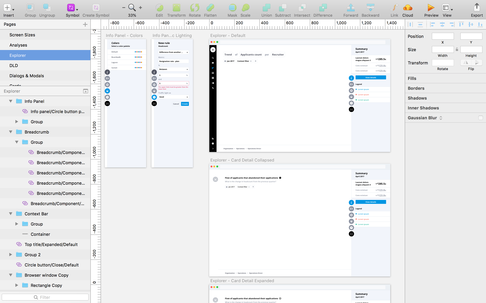

visier ui library
A Sketch UI library to help fix inconsistencies in the visual design and interaction states of Visier’s UI components. The goal is to increase overall productivity within our design team and to standardize component specifications for developers.
- Roles: UI Design, Visual Design
- Tools: Sketch
- Year: 2018
- Context: Internship (4 months)
- Team: Chuiee Yang, Aileen Wang
problem
Visier’s design team lacked a set of consistent components to share and use. Our team was progressively migrating from using Illustrator to Sketch as our primary design software, and a consistent set of UI components was needed for Sketch. As Visier grows as a company, a UI component library was crucial to ensure designers work with the latest iteration of components.
design process
research + exploration
When I was first involved with this ongoing project, it was at an early stage where it was relatively new to everyone on the team. This gave me the opportunity to start from ground up, meaning it was important to look into existing design systems and UI libraries established by other companies (such as Shopify Polaris, IBM’s Carbon Design System, and Google’s Material Design) and to see how their components are structured; in particular the Sketch UI components. Apart from researching other companies’ UI libraries, I looked into the best practices for using Sketch and making a UI library.
structure of components
It was important to have a baseline structure for our UI components before executing the details; this ensures that the designers on our team can easily locate the components and that they are consistently and logically grouped together. One of the biggest challenges I had to overcome is not being fully aware of all of the complex UI components that exist in our product. Apart from being assigned certain components to be built in Sketch, I actively explored the current build of our product to make sure I have a relatively better understanding of all the components that exists, how they relate to each other, and how I can group them together.

execution
When I executed each individual UI component, I thought of how to make it easy for designers to use each one. It was a challenge to find the right balance between modular and preset components; if a component was too flexible, users would have trouble figuring out whether or not a component can be used in a certain section of our product. If a component was too fixed into a preset state, users would find it limiting when it comes to configuring a component to their needs.
peer feedback + user testing
What helped me progress through my work was the feedback I received from my supervisor and peers as well as the informal user testing sessions from various individuals on my design team. The feedback I received either helped relieved doubts I had on design decisions I made or helped provide insight as to how to approach building out a specific component. For example, when I wasn’t sure whether or not the hover states of two different components should be the same, I brought up the question to my supervisor. We had a discussion about it, and resolved that they should follow the same pattern.
solution
building templates
To make the UI library easier to use for the designers on our team, I made a Sketch file specifically for templates. Ideally, this would give our team a one-stop-shop to pull any layout they need to communicate their user workflows or concepts. This means designers do not have to spend time worrying about the layout and the spacing between each component.
maintaining + editing components
Apart from making the Sketch UI library easy to use for our design team, it was important to make sure it was easy to make changes and edits to the components. The approach was simple: build each component from ground up; this way, the base components could be easily edited and reflected into the combined component.
For example, a search bar is made up of several base components: a container with several states (default, hover, and focused), text (placeholder and input), two icons (search and close), and a blinking cursor. The components were made into symbols then combined into a new symbol (the search bar), meaning all edits would be made through the base components. This is useful when considering the different variations of the search bar; if the search icon needed to be updated, only the base component for the icon would need to be edited in order for it to reflect into the different variations.
reflection
This was the first time I’ve ever built a UI component library, and although it was a daunting task, I’ve learned much about how components grow at various levels depending on the different combinations of components, and how it could be a challenge to maintain and unify the whole product consistently. Although this was an ongoing project, I believe my work helped pave the way for a growing company to ensure the consistency of components, allowing designers and potentially developers to work more efficiently.
next project: help for students →